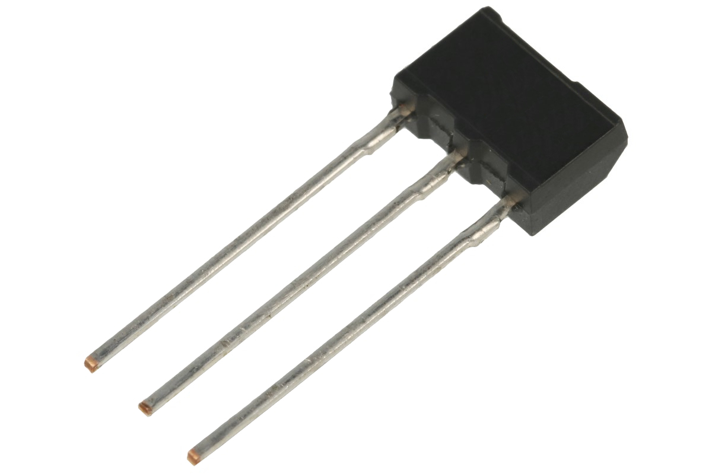

ELEMENTY ELEKTRONICZNE
Elementy elektroniczne s wykonane z r贸偶nych materia贸w i wedug r贸偶nych technologii, std maj r贸偶ne waciwoci i zastosowania. W ukadach elektronicznych wystpuj:
Elementy bierne: rezystory, kondensatory, cewki i transformatory
Elementy czynne: diody, tranzystory, ukady scalone
REZYSTOR
Dzieli si w zale偶noci od charakterystyki prdowo-napiciowej. Wyr贸偶nia si rezystory liniowe (wtedy, gdy prd pyncy przez taki rezystor jest wprost proporcjonalny do wystpujcego na nim spadku napicia) i nieliniowe.
Su偶 do ograniczania prdu pyncego w okrelonych gaziach obwodu oraz do ustalania odpowiednich spadk贸w napicia. Parametrem rezystora jest rezystancja, oznaczana liter R, kt贸ra wyra偶a si w omach ()
KONDENSATOR
element pojemnociowy obwodu elektrycznego, jest zbudowany z dw贸ch przewodnik贸w (okadzin), rozdzielonych warstw dielektryka.
Dzieli si je ze wzgldu na przeznaczenie oraz zastosowanie dielekryka
CEWKA
element indukcyjny obwodu elektrycznego, skada si z pewnej liczby zwoj贸w drutu przewodzcego. Zwoje s nawinite (np. jeden obok drugiego) na powierzchni walca (cewka cylindryczna) lub na powierzchni piercienia (cewka toroidalna).
Ze wzgldu na spos贸b nawinicia zwoj贸w cewki mo偶na tak偶e podzieli na jednowarstwowe i wielowarstwowe Parametrem cewki jest indukcyjno, oznaczana liter L, kt贸r wyra偶a si w henrach (H)
TRANSFORMATOR
skada si z dw贸ch sprz偶onych magnetycznie cewek nawinitych na wsp贸lny rdze. Jedna tworzy uzwojenie pierwotne, druga - uzwojenie wt贸rne. Transformatory s u偶ywane przede wszystkim do zamiany (zmniejszania lub zwikszania) napicia w obwodach prdu zmiennego
TRANSFORMATORY DZIELIMY NA:
Transformatory energetyczne umo偶liwiajce zmian napicia wystpujcego w sieciach wysokiego napicia (su偶cych do przesyania energii elektrycznej na du偶e odlegoci) na niskie napicie, do kt贸rego s dostosowane poszczeg贸lne odbiorniki)
Transformatory maej mocy stosowane m.in. w urzdzeniach elektrycznych i elektronicznych, w automatyce
Transformatory specjalne przeznaczone do r贸偶nych zastosowa specjalnych (np. przekadniki pomiarowe).
DIODA
dwuzaciskowy element elektroniczny zbudowany ze zcza p贸przewodnikowego p-n lub zcza metal-p贸przewodnik. Zale偶no prdu pyncego przez diod od przyo偶onego do jej zacisk贸w napicia jest nieliniowa
RODZAJE DID
Dioda wiecca (LED): emitujce promieniowanie w zakresie wiata widzialnego i podczerwieni, s u偶ywane w sprzcie elektronicznym m.in. jako wska藕niki wietlne lub wywietlacze numeryczne oraz nadajniki promieniowania podczerwonego.
Dioda prostownicza: przeznaczona g贸wnie do prostowania prdu przemiennego, jej g贸wn cech jest mo偶liwo przewodzenia prdu o du偶ym nat偶eniu.
Fotodioda: reagujce na promieniowanie wietlne, wykorzystuje si m.in. w detektorach wiata widzialnego i podczerwonego, miernikach odlegoci, komunikacji wiatowodowej.
TRANZYSTOR
Tranzystor to tr贸jzaciskowy p贸przewodnikowy element elektroniczny su偶cy do wzmacniania sygna贸w elektrycznych. Istniej tranzystory bipolarne i polowe.
UKAD SCALONY
to zminiaturyzowany ukad elektroniczny, zawierajcy od setek do milion贸w podstawowych element贸w elektronicznych, g贸wnie tranzystor贸w i diod. Oparte na ukadach scalonych stanowi podstaw techniki komputerowej. S stosowane r贸wnie偶 w automatyce, urzdzeniach pomiarowych itp.
REZONATOR KWARCOWY
to element elektroniczny wykonany z krysztau kwarcu. Jego dziaanie opiera si na zjawisku piezoelektrycznym. Rezonator su偶y do stabilizacji drga generator贸w elektronicznych